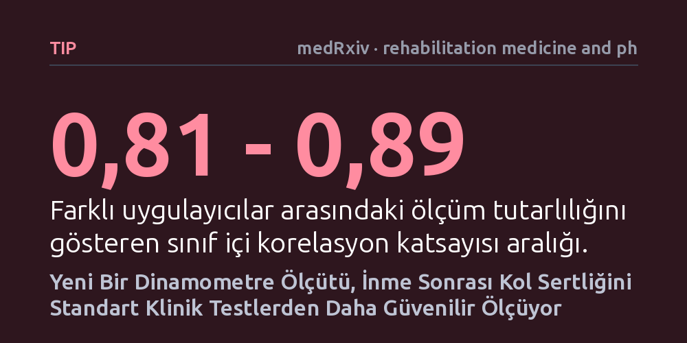

TIP · medRxiv · rehabilitation medicine and physical therapy · 2026-10-12
İnme sonrası kas sertliğini ölçen geleneksel el testlerinin güvenilmezliğine karşı, robotik dinamometre verilerini sağlıklı bireylerle kıyaslayan yeni bir ölçüm yöntemi (ScoreE) geliştirildi. Otuz beş inme hastasında denenen yöntem, eklem direncini standart klinik ölçeklerden çok daha yüksek güvenilirlikle sayısallaştırdı.
İnme sonrası kas sertliğinin takibinde hekimin el yordamına dayanan öznel değerlendirmelerin yerini, hastanın tekerlekli sandalyesinde dahi uygulanabilen nesnel ve sayısal bir ölçüm standardı alabilir.

İnme (felç) geçiren bireylerde en sık karşılaşılan ve günlük yaşamı en çok kısıtlayan komplikasyonlardan biri spastisite, yani kasların istemsiz biçimde aşırı gerilip sertleşmesidir. Özellikle dirsek ve el bileğini büken kaslardaki bu aşırı direnç; hastanın elini açmasını, yemek yemesini ya da kişisel bakımını yapmasını ciddi ölçüde zorlaştırır. Fizik tedavi süreçlerinde uygulanan ilaçların, botulinum toksini enjeksiyonlarının ya da egzersizlerin işe yarayıp yaramadığını anlamak için bu kas sertliğinin zaman içindeki değişimini hassas bir şekilde takip etmek gerekir.
Ne var ki klinik uygulamalarda on yıllardır kullanılan Değiştirilmiş Ashworth Ölçeği (MAS), tamamen hekimin veya fizyoterapistin hastanın uzvunu eliyle hareket ettirip hissettiği dirence göre bir puan vermesine dayanır. Bu yöntem muayene sırasında hızlı olsa da uygulayıcıdan uygulayıcıya büyük farklılıklar gösterir, son derece özneldir ve kasın hareket açısı boyunca direncini nasıl değiştirdiğini yansıtamaz. Bu çalışmanın temel sorusu tam da burada doğdu: İnme sonrası gelişen eklem direncini hekimin kişisel hissiyatına bırakmadan, sağlıklı bireylerin hareket profiliyle kıyaslayan nesnel ve matematiksel bir ölçütle güvenilir biçimde belirlemek mümkün mü?
Araştırmacılar bu soruyu yanıtlamak amacıyla 35 inme hastası ve karşılaştırma grubu olarak 21 sağlıklı yetişkini çalışmaya dahil etti. Ölçümlerde, eklemin hareket hızını sabit tutarak kas direncini tork cinsinden kaydeden izokinetik dinamometre adlı robotik bir cihaz kullanıldı. Öncelikle sağlıklı bireylerin dirsek ve el bileği bükülme hareketleri kaydedilerek, normal kas direncinin açıya göre nasıl değiştiğini gösteren 'sağlıklı referans koridoru' haritalandırıldı.
İnme hastalarının dirsek ve el bileği hareketleri hem geleneksel klinik el ölçeğiyle hem de dinamometreyle incelendi. Cihaz ölçümleri iki farklı oturma düzeninde yapıldı: Dinamometrenin kendi özel ergonomik koltuğunda ve hastanın günlük hayatta kullandığı tekerlekli sandalyesinde. Cihaz verilerinden 'ScoreE' adı verilen yeni bir ölçüt ve en yüksek tork (PeakT) değeri hesaplandı. ScoreE, hastanın hareket boyunca ürettiği direnç profilinin sağlıklı koridorun ne kadar dışına taştığını hem büyüklük hem de açısal yayılım açısından hesaplayan bir algoritmadır. Ayrıca yöntemin kısa süreli etkilere duyarlılığını sınamak için 10 dakikalık yerel kas titreşimi seansı uygulanarak öncesi ve sonrası ölçümler kaydedildi.
Elde edilen veriler, ScoreE ölçütünün hem farklı uygulayıcılar arasında hem de aynı hastaya uygulanan tekrarlı testlerde oldukça yüksek bir güvenilirlik sunduğunu gösterdi. İki farklı gözlemcinin ölçümleri arasındaki tutarlılığı gösteren sınıf içi korelasyon katsayısı (ICC) 0,81 ile 0,89 arasında çıktı. Aynı hastanın farklı zamanlardaki test-tekrar test tutarlılığı ise 0,76 ile 0,93 gibi oldukça yüksek seviyelere ulaştı. Geleneksel zirve tork değeri orta ile iyi düzeyde güvenilirlik verirken, yaygın kullanılan Ashworth ölçeği belirgin şekilde daha düşük ve değişken bir uyum sergiledi.
ScoreE ile geleneksel el ölçeği puanları karşılaştırıldığında, özellikle dirsek ekleminde orta düzeyde bir örtüşme görüldü; el bileğinde ise bu ilişki daha zayıf ve tutarsız kaldı. Öte yandan klinik ölçek elle daha hızlı yapılabilse de, dinamometre ölçümlerinin hastalar tarafından son derece rahat tolere edildiği saptandı. Tüm ölçüm koşullarında hastaların bildirdiği ortanca ağrı puanı 10 üzerinden 0 oldu. Ancak 10 dakikalık titreşim seansının kas direncinde yarattığı değişimler çok küçük ve hastadan hastaya değişken kaldığı için yöntemin anlık tedavi yanıtını yakalama gücü bu deneyde tam olarak netleştirilemedi.
Bu bulgular, inme rehabilitasyonunda kas sertliğinin sadece 'en yüksek direnç anı' üzerinden değil, hareketin tüm açısı boyunca nasıl dağıldığı üzerinden değerlendirilmesi gerektiğini ortaya koyuyor. ScoreE, hastanın direncini sağlıklı bir popülasyonun hareket koridoruyla kıyaslayarak hem aşırı direncin şiddetini hem de eklemin hangi açılarında ortaya çıktığını görsel ve sayısal olarak sunabiliyor. Bu yaklaşım, kasın sinirsel kaynaklı aşırı refleks nedeniyle mi yoksa dokusal sertleşme nedeniyle mi direnç gösterdiğini anlamada klinik uzmanlara somut veriler sağlayabilir.
Ayrıca ölçümlerin hastanın kendi tekerlekli sandalyesinde otururken de yüksek güvenilirlikle yapılabilmiş olması, yöntemin pratik uygulanabilirliğini artırıyor. Ağır felçli veya sedyeden kalkması zor hastaları özel cihaz koltuklarına taşımadan da hassas ölçüm alınabilmesi önemli bir avantajdır. Yine de yöntem henüz bir kavram kanıtlama aşamasında olduğundan, geniş hasta gruplarında ve uzun süreli rehabilitasyon takiplerinde klinik kararları ne kadar değiştirdiğinin doğrulanması gerekiyor.